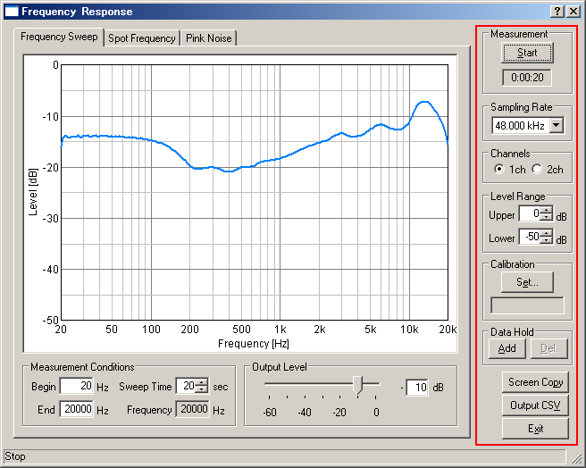

DSSF3 > RA > Reference Manual > Frequency response

| Commands or options | Descriptions |
|---|---|
| Measurement | Start to measure the frequency response. It stops if you click during the measurement. A bottom of a stop button is display the duration after the measurement of the frequency response is started. |
| Sampling Rate | Select the sampling rate for the measurement of the frequency response. The maximum frequency that can be measured is 1/2 of the sampling rate. |
| Channels |
[1ch]: Measurement is performed by the Left channel only. [2ch]: Measurement is performed by both Left and Right channels. |
| Level Range |
[Upper]: Input the maximum level of the vertical axis of the graph. [Lower]: Input the minimum level of the vertical axis of the graph. |
| Calibration | Microphone calibration data is managed. |
| Data Hold | Hold the measurement data. |
| Screen Copy | Open a new window to show the graph of the time of clicking. It is possible to open multiple windows simultaneously. |
| Output CSV | Output the measured data of the frequency response to a CSV Format file. |
| Exit | Close the measurement window of the frequency response. |
DSSF3 > RA > Reference Manual > Frequency response